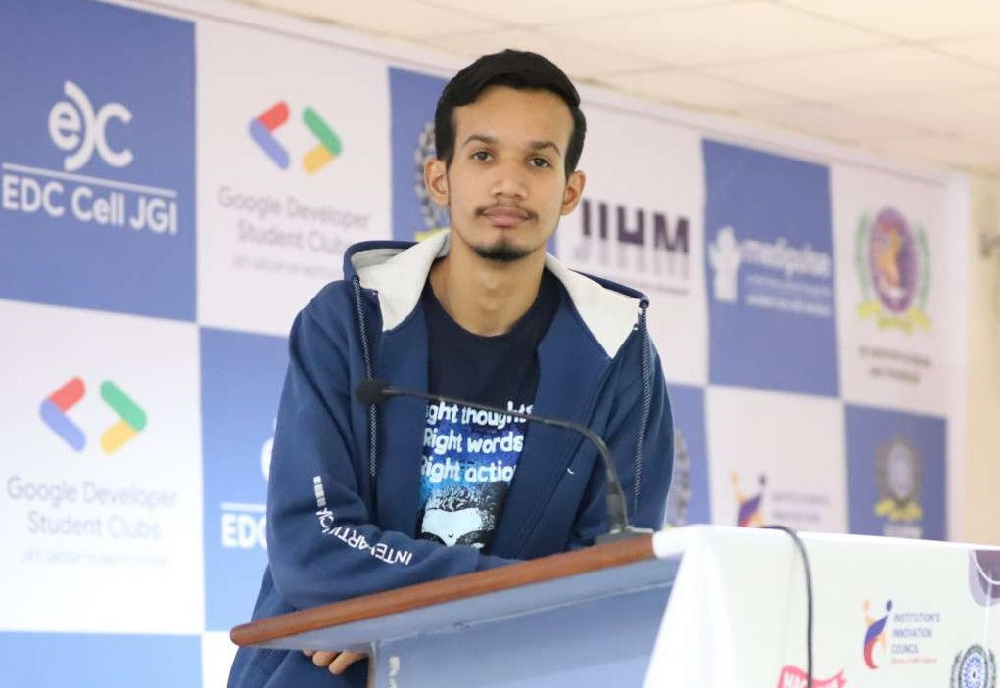

Harsh Narayan Asopa

Objective:
Organized and successful at managing multiple priorities with a positive attitude. Willingness to take on added responsibilities to
meet team goals. My soft skills include time management, adaptability, team work and problem solving. Seeking an entry level
opportunity with an esteemed organization where I can utilize my training, skills and enhance learning in the field of work.
Educational Qualifications:
- Bachelor of Technology:
Jodhpur Institute Of Engineering And Technology, Jodhpur
CSE specialization with Artificial Intelligance and Machine Learning
- High School Diploma:
Our Lady Of Pillar Convent School, Jodhpur
Physics, Chemistry, Mathematics
04/2017-04/2019
Work Experience and Achievements
- Intern at INDIAN SPACE RESEARCH ORGANIZATION (ISRO) - Space Application Centre (SAC), Ahmedabad
- Worked as a Trainee at Celebal Technologies, Jaipur
- Worked as a Trainee at AWS VEPSUN TECHNOLOGIES, Bengaluru
- Secured 1st position in Mindsphere Hackathon, organized by DSC JGI an 8hr intercity Hackathon
- Secured 1st position in Business Plan Event, organized by JIET
Skills
- HTML/CSS/JAVASCRIPT
- C/C++/Python
- React Js
Projects:
- Evaluation of Blended Very Short-Range Rainfall Forecast over Northern India using Pysteps
- Created a Login Web-Page with the Help of AUTH-0
- Created a website which focuses on QR Generating Tickets and Entry System in Heritage Places and sites
- Participated in Flipkart grid 3.0 and created a path following robot without using any sensor, worked as Lead of
hardware assembly team
- Canteen Management System using C++ programming language
Others: